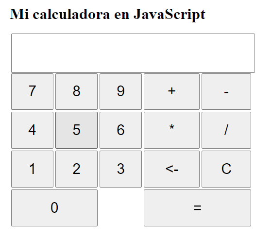

Enunciado
A continuación, deberá crear una calculadora en JavaScript haciendo dos documentos, uno que será .js y otro .html.
El documento html deberá contener:
- Un título que será “Mi calculadora en JavaScript”
- Un título h1 que será el mismo que el anterior.
- Una caja de texto donde aparecerán los resultados de las operaciones
- Los botones necesarios para la calculadora
La calculadora deberá tener una estética parecida a la siguiente:
En el archivo .js deberá crear las siguientes funcionalidades:
- Realizar las operaciones aritméticas de suma, resta, multiplicación y división
- Crear una tecla igual para que muestre el resultado de la operación
- Crear una tecla que limpie el resultado de la operación
- Crear una tecla que elimine el último carácter escrito
- Validar que cuando introduzca caracteres por teclado, solo acepte números y teclas de dirección. (opcional)
Actividad asociada al CE1.7, CE2.2, CE2.3 y CE2.4
CE1.7 Interpretar scripts que resuelvan un problema previamente especificado:
- Identificar el tipo y el uso de los datos declarados dentro del script.
- Describir las estructuras de programación utilizadas para organizar las acciones del programa.
- Reconocer las instrucciones proporcionadas por el lenguaje de script utilizadas en las operaciones de manipulación, entrada y salida de datos.
- Insertar el script dentro de la página web utilizando las etiquetas apropiadas.
- Probar la funcionalidad del script utilizando un navegador.
- Detectar y corregir los errores de sintaxis y de ejecución.
- Documentar los cambios realizados en el script.
CE2.2 Identificar los objetos predefinidos por el lenguaje de guion para manejar nuevas estructuras y utilidades que añadirán nuevas funcionalidades a las páginas, de acuerdo a las especificaciones técnicas del lenguaje.
CE2.3 Describir e identificar los objetos del documento que permiten añadir interactividad entre el usuario y el script, así como sus propiedades y métodos.
CE2.4 Describir los eventos que proporciona el lenguaje de guion: de ratón, de teclado, de enfoque, de formulario y de carga, entre otros, para interactuar con el usuario y relacionarlos con los objetos del lenguaje.
Solución
Actividad asociada al CE1.7
El código proporcionado utiliza variables, funciones y eventos para implementar la calculadora en JavaScript.
- Variables:
- result: Almacena la referencia al elemento de entrada de texto donde se muestra el resultado de las operaciones.
- Funciones:
- appendToResult(value): Agrega el valor especificado al resultado actual en la caja de texto.
- calculateResult(): Calcula el resultado de la expresión matemática ingresada en la caja de texto y lo muestra.
- clearResult(): Limpia el contenido de la caja de texto del resultado.
- deleteLastCharacter(): Elimina el último carácter ingresado en la caja de texto del resultado.
- Eventos:
- keydown: Se utiliza para detectar las teclas presionadas por el usuario y realizar acciones correspondientes, como agregar caracteres, calcular el resultado, limpiar el resultado o eliminar el último carácter.
El código utiliza instrucciones proporcionadas por JavaScript para manipular los elementos del documento HTML:
- getElementById("elementId"): Obtiene una referencia a un elemento del documento HTML utilizando su ID.
- addEventListener("event", callback): Agrega un controlador de eventos a un elemento HTML para escuchar un evento específico y ejecutar una función de devolución de llamada cuando ocurra el evento.
- event.preventDefault(): Evita que se ejecute el comportamiento predeterminado asociado a un evento, como el envío de un formulario o el desplazamiento de la página.
Para insertar el script dentro de la página web, se utiliza la etiqueta <script> en el archivo HTML, y se especifica el nombre del archivo de script utilizando el atributo src. defer sirve para que se cargue el script de manera asíncrona y se ejecute cuando el HTML termine de cargar.
Para probar la funcionalidad del script, se debe abrir el archivo HTML en un navegador web. Al interactuar con los botones de la calculadora y presionar las teclas correspondientes, se realizarán las operaciones matemáticas y se mostrarán los resultados en la caja de texto.
Si se detectan errores de sintaxis o ejecución, se deben corregir en el archivo JavaScript. Algunos errores comunes pueden ser olvidar cerrar una llave {}, una paréntesis (), o utilizar un nombre de función o variable incorrecto.
Es importante documentar los cambios realizados en el script, como añadir nuevas funcionalidades, corregir errores o mejorar el rendimiento. Esto ayuda a mantener un registro claro de las modificaciones y facilita la colaboración y el mantenimiento del código a largo plazo.
Actividad asociada al CE2.2
En JavaScript, hay varios objetos predefinidos que proporcionan estructuras y utilidades para agregar nuevas funcionalidades a las páginas web. Algunos de estos objetos incluyen:
- Document Object (Objeto Documento): Representa el documento HTML cargado en el navegador y proporciona métodos y propiedades para interactuar con los elementos y contenido del documento.
- Window Object (Objeto Ventana): Representa la ventana del navegador y proporciona métodos y propiedades para controlar y manipular la ventana del navegador, como redireccionar a otras páginas, abrir nuevas ventanas, ajustar tamaños y ubicaciones, etc.
- HTMLElement Object (Objeto Elemento HTML): Representa un elemento HTML en el documento y proporciona métodos y propiedades para interactuar con ese elemento, como agregar clases, modificar atributos, adjuntar eventos, etc.
- Event Object (Objeto Evento): Representa un evento que ocurre en el documento, como hacer clic en un botón o presionar una tecla. El objeto evento proporciona información sobre el evento y métodos para controlarlo.
- XMLHttpRequest Object (Objeto XMLHttpRequest): Permite realizar peticiones HTTP asíncronas desde el navegador, lo que permite la comunicación con servidores y la carga de contenido dinámico en una página web.
- JSON Object (Objeto JSON): Proporciona métodos para trabajar con objetos JavaScript en formato JSON (JavaScript Object Notation), que es un formato comúnmente utilizado para intercambiar datos entre un servidor y una página web.
Estos son solo algunos ejemplos de los objetos predefinidos en JavaScript que se utilizan comúnmente para agregar funcionalidades a las páginas web. Hay muchos más objetos disponibles en el lenguaje que proporcionan diferentes capacidades y características.
Actividad asociada al CE2.3
En el ejemplo de la calculadora, se utilizan objetos del documento para permitir la interactividad entre el usuario y el script. Estos objetos y sus propiedades y métodos asociados son:
- document.getElementById(): Este método del objeto 'document' permite obtener una referencia a un elemento del documento HTML utilizando su ID. Se utiliza en el código para obtener la referencia al elemento de entrada de texto donde se mostrarán los resultados de las operaciones.
- Propiedades y métodos asociados: No hay propiedades o métodos específicos asociados a este método. Una vez obtenida la referencia al elemento, se pueden utilizar las propiedades y métodos generales de los objetos del documento para interactuar con él.
- result.value: La propiedad 'value' se utiliza para acceder al valor del elemento de entrada de texto. En el ejemplo, se utiliza para obtener o establecer el contenido de la caja de texto donde se muestran los resultados de las operaciones.
- Propiedades y métodos asociados: No hay propiedades o métodos específicos asociados a esta propiedad. Se utiliza como una propiedad estándar de los elementos de entrada de texto en el documento HTML.
- document.addEventListener(): Este método del objeto 'document' se utiliza para agregar un controlador de eventos a un elemento HTML para escuchar un evento específico y ejecutar una función de devolución de llamada cuando ocurra el evento. En el ejemplo, se utiliza para detectar el evento 'keydown' y realizar acciones correspondientes cuando el usuario presiona una tecla.
- Propiedades y métodos asociados: No hay propiedades o métodos específicos asociados a este método. Una vez agregado el controlador de eventos, se pueden utilizar las propiedades y métodos generales del objeto Event para obtener información sobre el evento.
- event.key: La propiedad 'key' del objeto Event se utiliza para obtener la tecla presionada por el usuario en el evento 'keydown'. En el ejemplo, se utiliza para determinar qué acción realizar en función de la tecla presionada.
- Propiedades y métodos asociados: No hay propiedades o métodos específicos asociados a esta propiedad. Se utiliza como una propiedad estándar del objeto Event.
Estos son los principales objetos y propiedades/métodos utilizados en el ejemplo de la calculadora para permitir la interactividad entre el usuario y el script. Hay otros objetos y métodos disponibles en el documento que se pueden utilizar según las necesidades específicas de interacción con el usuario.
Actividad asociada al CE2.4
JavaScript proporciona una amplia gama de eventos que permiten interactuar con el usuario en diferentes contextos. A continuación se describen algunos de los eventos más comunes y se relacionan con los objetos del lenguaje:
-
Eventos de ratón:
- click: Se dispara cuando se hace clic con el botón izquierdo del ratón en un elemento.
- mouseover y mouseout: Se disparan cuando el cursor del ratón entra o sale de un elemento.
- mousedown, mouseup y mousemove: Se disparan cuando se presiona, se suelta o se mueve el ratón sobre un elemento.
Estos eventos pueden ser escuchados y controlados utilizando los métodos del objeto document o el objeto específico del elemento HTML al que se desea añadir la interacción.
-
Eventos de teclado:
- keydown y keyup: Se disparan cuando se presiona o se suelta una tecla del teclado.
- keypress: Se dispara cuando se mantiene presionada una tecla del teclado.
Estos eventos se pueden escuchar utilizando el método addEventListener() del objeto document o del elemento específico al que se desea agregar la interacción.
-
Eventos de enfoque:
- focus: Se dispara cuando un elemento recibe el foco, es decir, cuando se selecciona para interactuar con él.
- blur: Se dispara cuando un elemento pierde el foco, es decir, cuando se deselecciona.
Estos eventos se pueden escuchar utilizando el método addEventListener() del objeto document o del elemento específico al que se desea agregar la interacción.
-
Eventos de formulario:
- submit: Se dispara cuando se envía un formulario.
- input y change: Se disparan cuando se modifica el valor de un elemento de formulario, como un campo de texto o una casilla de verificación.
Estos eventos se pueden escuchar utilizando el método addEventListener() del objeto document o del elemento de formulario específico al que se desea agregar la interacción.
-
Eventos de carga:
- load: Se dispara cuando se carga completamente un recurso, como una página web, una imagen o un archivo de JavaScript.
- DOMContentLoaded: Se dispara cuando el documento HTML ha sido completamente cargado y parseado, sin necesidad de esperar la carga de recursos externos.
Estos eventos se pueden escuchar utilizando el método addEventListener() del objeto window.
Estos son solo algunos ejemplos de los eventos disponibles en JavaScript para interactuar con el usuario. Hay muchos más eventos disponibles que permiten realizar acciones específicas en respuesta a las interacciones del usuario. Cada objeto del lenguaje, como document, window o elementos HTML específicos, puede tener diferentes eventos asociados, y se pueden utilizar los métodos addEventListener() y otros métodos relacionados para gestionar estos eventos.